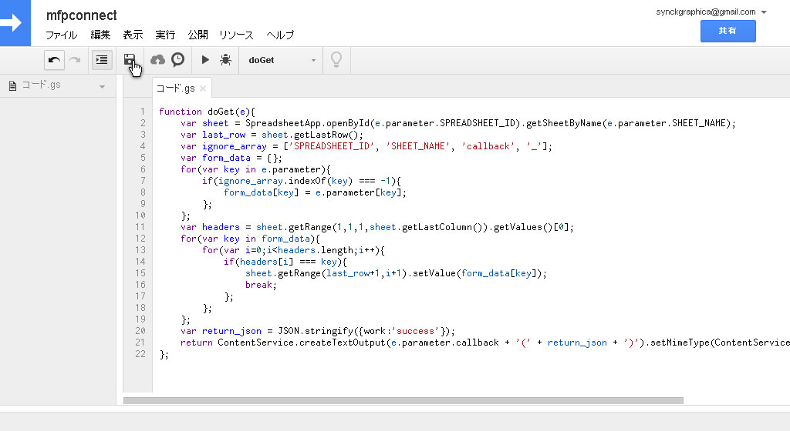
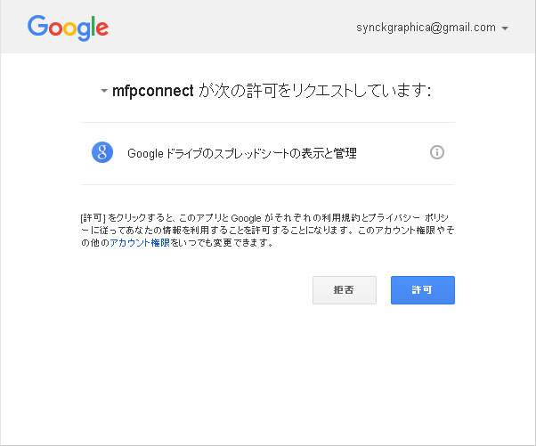
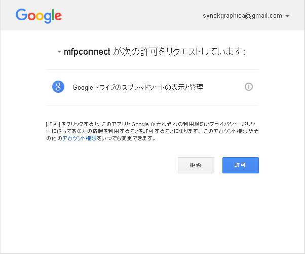

Mailform Pro
もっと究極の進化を遂げたメールフォームプロの登場です。
Googleスプレッドシートとの連携機能を利用する場合はconfig.cgiを編集し、push @Modules,'spreadsheet';を有効にしてください。
- config.cgiを編集し、push @Modules,'spreadsheet';を有効にします。
- Googleドライブのマイドライブを開きます。
- 新規をクリックして適当な名前のフォルダを作成します。今回は例としてmailformproというフォルダを作成します。ほいで作成したmailformproというフォルダに移動します。
- 新規をクリックしてGoogleスプレッドシートを作成します。ファイル名は適当でよいですが、今回はmfpという名前にします。
- スプレッドシートの名前をmfpdataに変更しましょう。
-
Googleドライブに戻り、作成したスプレッドシートmfpを右クリックすると表示される共有可能なリンクを取得をクリック。
 表示されたURLをコピーしましょう。
https://drive.google.com/open?id=1mdfYAQuHuI0cjt2rmoM4HUiWeCPnN6i6r_FOqsAXBAcみたいなやつです。id=以降の文字列が大事な部分です。
表示されたURLをコピーしましょう。
https://drive.google.com/open?id=1mdfYAQuHuI0cjt2rmoM4HUiWeCPnN6i6r_FOqsAXBAcみたいなやつです。id=以降の文字列が大事な部分です。
この際、自動的に共有がオンになるため必ず共有を無効に再設定してください。 - 新規をクリックして［その他］→［Google Apps Script］を作成します。 Google Apps Scriptが表示されていない場合は ［新規］→［その他］→［アプリを追加］をクリックし、左上のセレクトからby Googleを選択してください。 Google Apps Scriptが表示されると思うので、接続をクリックしてください。
- 同梱されている/examples/code.gs.txtの中身のコードをコピー＆ペーストし、保存します。  ドキュメント名はmfpconnectとしました。
-
［公開］→［ウェブアプリケーションとして導入］をクリック。
アプリケーションにアクセスできるユーザーを全員（匿名ユーザーを含む）に設定し導入をクリック。
 許可が求められる場合は許可します。

許可が求められる場合は許可します。

-
表示される現在のウェブアプリケーションのURLをコピーしましょう。これで準備はあらかた完了です。
一連の作業でコピーした情報は
- シートの名前（例ではmfpdata）
- 共有可能なリンク
- 現在のウェブアプリケーションのURL
-
さらに最後に作成したGoogleスプレッドシートを開きましょう。1行目が見出し行となります。
ここに記録したい項目名を入力します。本項ではこのサンプルHTMLを例にして項目名を入力していきます。入力欄のname属性を見出しに設定するので
mfp_serial、mfp_date、姓、名、セイ、メイ、性別、emailと設定します。 - これで連携の作業は完了です。動作テストしてみましょう！本機能はこちらを参考にさせていただきました。